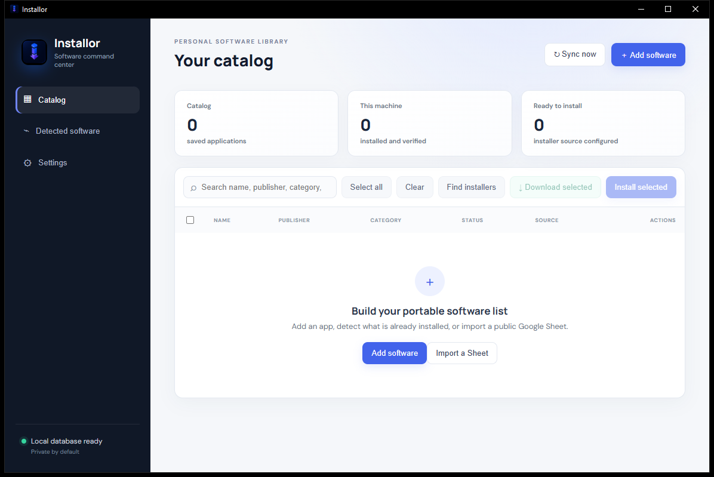

01
Portable catalog
Record package IDs, direct URLs, installer formats, checksums, platforms, tags, and named-device categories.
Scan and curate software in bulk, synchronize one portable catalog between computers, acquire trusted packages, verify downloads, and execute explicit installation plans.
Installor connects inventory, catalog, acquisition, verification, and execution without hiding consequential decisions. Detection and file matching remain suggestions. Installs begin only after selection and confirmation.
Record package IDs, direct URLs, installer formats, checksums, platforms, tags, and named-device categories.
Review filtered Windows, macOS, or Linux results with checkboxes, search, Select visible, Add selected, and Add all.
Stream downloads with progress and compare optional SHA-256 values obtained from a trusted publisher.
Invoke native managers and common installer formats through structured plans that avoid shell interpolation.
Import any public Viewer link, or use the five-step in-app wizard to copy a version-matched Apps Script and synchronize records by the device names users choose.
A focused desktop command center makes catalog state, machine status, sources, and next actions visible without turning software setup into a black box.

Catalog and installation state live in a per-user SQLite database. Sync exists only after configuration.
Discovery and fuzzy matches never silently enter the catalog. Installation requires selection and confirmation.
Automated coverage, real-platform validation, signing status, and known limitations are documented separately.
Installor creates a compact, inspectable platform for studying software provenance, policy-aware automation, reconciliation under intermittent connectivity, and the usability of human oversight.
Start locally. Synchronize between computers. Keep every consequential action visible.